Plugin Version:
1.1.2 |
Release Notes
Plugin Version:
1.1.2 |
Release Notes
Overview
Process designers can use the Process Documenter plugin to create, maintain and generate professional-looking documentation about each process in a short amount of time, so other users can understand how the process works.
By adding sections to a group of elements, or adding a special section for just one element on the process map, process designers can easily organize documentation by element on the process map. You can create additional sections for each element if necessary. The complete documentation can turn into a print-friendly document that can export in PDF and DOCX format.
Requirements
The Process Documenter plugin has the following requirements:
- This plugin is compatible with ProcessMaker 3.2.3 and later.
- This plugin is compatible with the Microsoft Edge, Mozilla Firefox and Google Chrome web browser.
Installation
Follow these steps to complete the enterprise plugin installation.
1. Log in with a user, such as "admin", who has the PM_SETUP_ADVANCE permission in their role.
2. Go to ADMIN > Plugins > Enterprise Manager.
3. In the Enterprise Plugins tab, install the Process Documenter plugin doing one of the following:
- Click Install from File and upload the plugin file.
- Click the Process Documenter plugin's Install now or Upgrade now button in the list of available plugins.
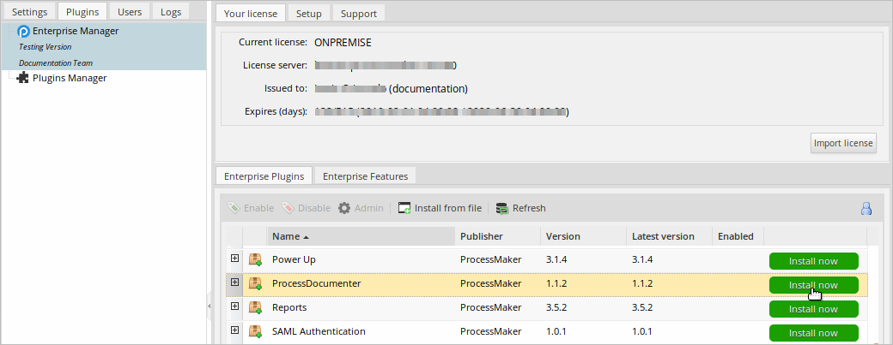
For more information about plugin options, see Enterprise Manager Tool.
4. After installing the plugin, make sure that the Process Documenter plugin is enabled . If the plugin is not enabled, click the Enable button, as shown in the graphic below.
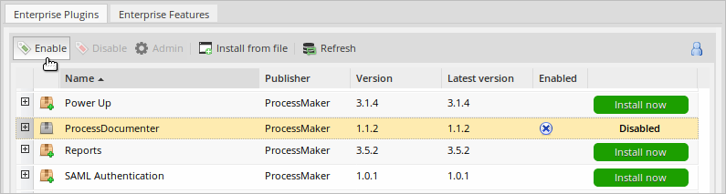
Configuration
After the plugin is enabled, the Process Documenter Settings option appears under the Admin > Plugins sidebar.
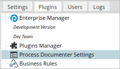
The Process Documenter Settings option allows you to create, edit and delete Process Documenter sections for processes or elements globally. This means that changes to the section are displayed in all the processes in the workspace.
Click the Process Documenter Settings option to display the Sections panel on the right:
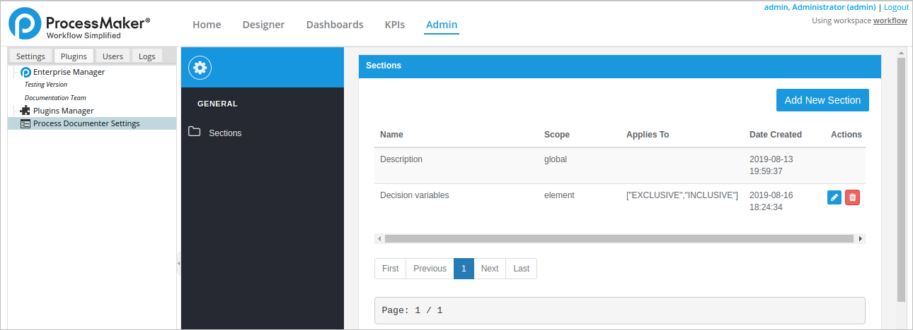
The section list has the following columns:
- Name: The name of the section.
- Scope: The scope of the section.
- Element: The scope of this section only applies to the element specified in Applies To column.
- Global: The scope applies globally to all elements in the process.
- Applies To: The elements to include in the section. The value of this column is blank if the Scope column is "Global".
- Date Created: The date when the section was created. This value is filled in automatically.
- Actions: The actions you can perform:
- Edit: Edit a selected section.
- Delete: Delete a selected section.
By default, the Process Documenter plugin creates the "Summary" section in each process in the workspace. To add a new section, see Creating a New Section.
Process Documenter Designer
The Process Documenter Designer allows you to enter, format and organize information about the process in sections about each element. Click an element and do any of the following:
- Enter a description of what the element does.
- Describe how the element is configured and works.
- Enter other element information into the Summary section (and other custom sections added).
After the plugin is enabled, a new button named Process Documenter appears next to the Redo Action button in the top toolbar of each process in the workspace.
Click the Process Documenter button to access the Process Documenter Designer interface.

The Process Documenter Designer interface includes:
- Process Title: The name of the process.
Note: Process Title displays names with angular brackets
< >like<<TestName>>. However the Preview, PDF and DOCX formats will not display the name correctly because they render with HTML. To avoid this behavior, do not create process names with angular brackets. - Designer: The Designer button returns you to the regular process designer.
- Preview: The Preview button generates the process document with all the information entered. For more information, see this section.
- Zoom Buttons: Zoom in, zoom out and center buttons to change the view of the process diagram.
- Process Diagram: The process map as a diagram.
- Help Icon: This icon links to the Process Documenter plugin documentation.
- Summary section and other sections: The Summary section contains a text editor where you can create tabs to describe each element. For more information about the text editor, see this section. You can also add more sections.
Note: As of Process Documenter 1.1.0, a Task section retains its documentation in the Process Map from Designer even if you change that element to a different Task type, then return it to the original Task type in which you wrote the documentation.
- Process Inspector: The Process Inspector displays element properties. For more information, see this section.
When you click on an element in the process diagram, a green square appears around the element. The Process Inspector section refreshes with the element's properties and the summary section displays the information that was added about the element.
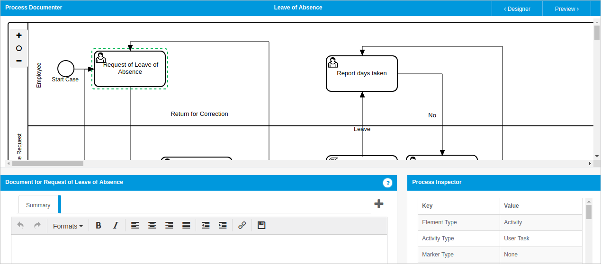
Text Editor
Use the text editor to enter information about each element in the process and format it so the text appears nicely in the document generated later.
As of Process Documenter 1.1.0, the Text Editor removes formatting of pasted text that is not supported by the Text Editor such as tables and fonts. Pasted text becomes plain text.
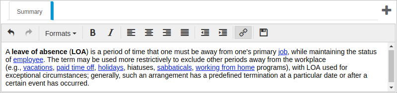
The editor's toolbar includes the following options:
| Action | Icon | Description |
|---|---|---|
| Undo |  |
Undoes actions in the text editor, including changes to either text content or text formatting. |
| Redo |  |
Redoes actions in the text editor, including changes to either text content or text formatting. |
| Formats | Specifies the format of new text or changes the format of a selected text.
|
|
| Bold |  |
Turns bold formatting on and off for new or selected text. |
| Italic |  |
Turns italic formatting on and off for new or selected text. |
| Align Left |  |
Sets the alignment of the current text or selected paragraph to the left. |
| Align Center |  |
Sets the alignment of the current text or selected paragraph to the center. |
| Align Right |  |
Sets the alignment of the current text or selected paragraph to the right. |
| Justify |  |
Justifies the text boundaries of the current or selected paragraph. Spaces entered at the end of a line are included and affect the justification of a line. |
| Decrease Indent |  |
Reverses the increase indent action. This option is applied only if the Increase Indent option was already applied to the text. |
| Increase Indent |  |
Increases the distance between the current paragraph (the selected one or the one where the cursor is placed) and the page's left margin.
Note: Indented rows near the left margin do not display correctly in the Preview, PDF and DOCX formats because of limitations in the rich text editor export. |
| Insert/Edit Link |  |
Inserts a link in the element's description. By clicking the link icon, a dialog window is displayed. 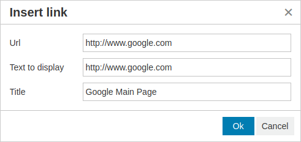
|
| Save Document |  |
Saves the content of the text editor. |
Process Inspector
The Process Inspector section displays all the relevant information about the element selected, so you don't have to return to the designer to review it. If no element has been selected, the Process Inspector section displays the properties of the process, as shown in the image below.
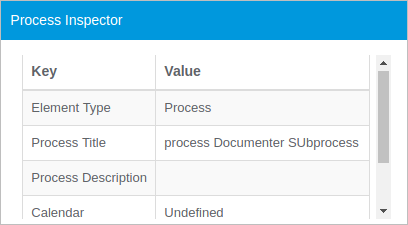
The properties displayed for each element depend on the type of element. Below is the list of elements; click on the name of an element to display an example of what the Process Inspector displays.
|
|


Creating a New Section
To create a new section to include additional information, click on the + icon above the editor toolbar in the Process Documenter designer. The new section can include all the elements of that particular process, for some elements, or for a specific element, depending on its scope configuration.
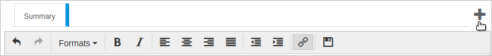
A new section can also include in all the processes in a workspace by clicking the Add New Section button in the Process Documenter Settings section under Admin > Plugins. The new section can appear for all the elements in all processes or just for some elements in all processes in the workspace.
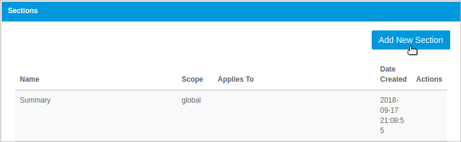
By clicking either option, the Add New Section dialog displays.
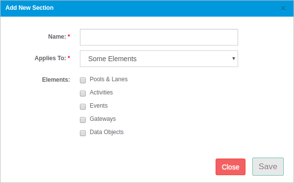
To add a new section, follow these steps:
- Name: (Required) Enter the name of the new section.
Applies To: (Required) Select the scope of the new section.
If the New Section tab of the Process Documenter Designer was clicked, the scope field has three options:
- All Process Elements: The new section is included for all the elements of the process.
- This Element Only: The section is included only for the current element selected.
- Some Elements: The new section is included for the elements checked in the Elements section. Note that at least one element must be selected.
If the Add New Section button was clicked under the Process Documenter Settings option, this field has two options:
- Global: The section is added for all elements in all processes in the workspace.
- Some Elements: The section is added for the elements selected in the Elements field in all the processes in the workspace.
Elements: Check the elements that contains the new section:
- Pool & Lanes (Pool, Lane)
- Activities (Empty Task, User Task, Manual Task, Business Rule Task, Script Task, Service Task)
- Events (Start Event, Intermediate Event, End Event)
- Gateways (Exclusive Gateways, Parallel Gateways, Inclusive Gateways)
- Data Objects (Data Inputs, Data Outputs, Data Stores)
The Elements options are only available if the option selected in the Scope field is "Some Elements".
For example, to create a new section only for user tasks in the current process, click on the + icon and configure the new section as shown in the image below.
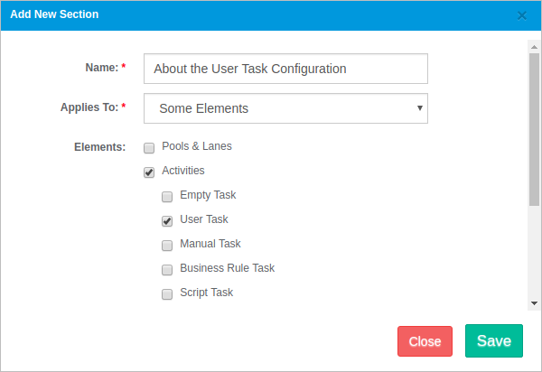
Click Save and the new section appears in a new tab for all the user tasks in the current process.
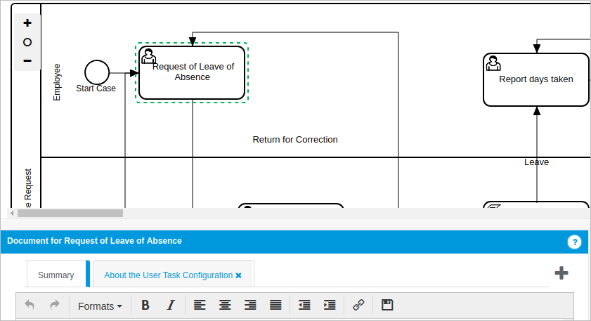
Exporting the Process Documenter Information
All the information entered into the Process Documenter designer can export by selecting the ProcessDocumenter option in the Promotion Manager exporting option.

Generating the Document
By clicking the Preview button, a new panel is displayed with the document generated by the Process Documenter plugin. The preview of the document contains all the information filled out in all the sections organized by element. The Preview panel is divided in three sections: the preview menu at the top of the panel, the preview document at the left and the list of the process elements at the right.
Preview Menu
The menu at the top side of the panel displays buttons with the available options in the current document.
The above graphic displays the following options:
- Process Title: The name of the process. There is a known issue regarding ProcessMaker installations on Linux systems. Linux systems support names up to 256 characters. If ProcessMaker is installed under a Linux system and the process title is longer than 256 characters, documents cannot be downloaded.
- Back: The Back button, which allows you returns to the Process Documenter environment.
- Download: Clicking the Download button displays two options to download the current document. You can download the document in DOCX and PDF format. Note that DOCX files downloaded from the Process Documenter plugin that are then uploaded to a Google Drive do not images images.

Preview Document
The section on the left side of the panel shows a preview of the document. The first time the preview is created the order of the elements are:
- Cover Page
- Process Title
- Diagram Image
- Process
- Pools
- Lanes
- Start Events
- Activities
- Gateways
- Data Objects
The first page or cover page contains the title of the process in big letters and the description as a subtitle along with the ProcessMaker logo, as shown in the image below.

At the beginning of the second page, the title of the process, the process diagram and the text entered in the Process Description section displays. Process Documenter displays the entire process diagram. If the process diagram is large, the image in the preview document appears small. As a best practice, if your process designs are large and do not display well on-screen without extensive scrolling to view it, consider using sub-processes to make your process designs more concise.

After the Process Description section, each element section(s) is shown.
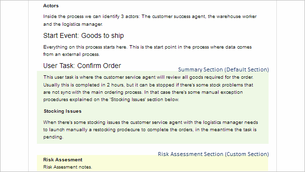
An element section has the following structure:
- Type of Element and Name: The type and name of the element separated by a colon (:).
- Description: The information entered in the Description section of the element.
- Custom Sections: The information in created sections. These sections are ordered by their creation date.
Note that if an element section is defined but has no documentation in it, neither the section nor its title is shown in the document.
List of Process Elements
The section on the right side of the panel displays the list of all the elements in the process and defines the order of these elements in the document. To change the order, click on an element, drag it up or down then drop it.
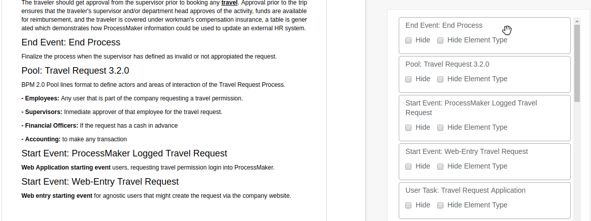
In this section it is also possible to hide the type of the element in the document by checking the Hide Element Type box, or hide the element section by checking the Hide box. Every time a change is made, the preview section is updated automatically.
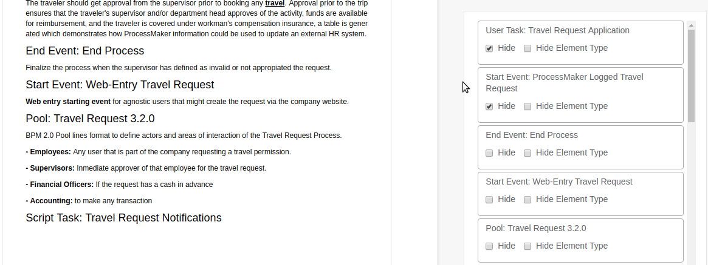